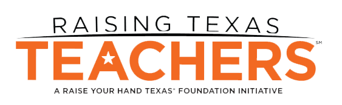
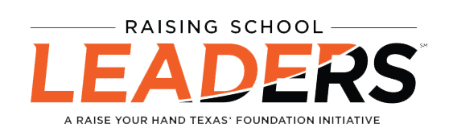
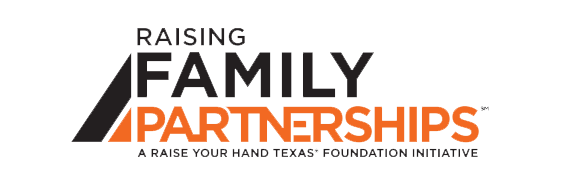

Raising Blended Learners is a pilot instructional program that uses both online and brick-and-mortar strategies to create and scale a more student-centered approach to instruction in Texas. Five demonstration sites will receive up to $500,000 to implement programs. In addition, 15 districts selected as pilot networks have received implementation support.

Raising Texas Teachers is a $50 million investment over the next 10 years toward elevating the teaching profession in Texas. The program will provide $8,000 per student per year in scholarship funding for students committed to a career in teaching, in addition to technical support at 10 premier teacher preparation programs across the state. Over time, the scholarship program will grow to include 500 fellows annually.

Through Raising School Leaders, Raise Your Hand Texas and the Raise Your Hand Texas Foundation have sent more than 1,000 school principals, school district teams, and other public education stakeholders to leadership development and coaching programs at Harvard University and other colleges and education organizations across the country. To date, our total investment in the program has exceeded +$15 million.

Raising Family Partnerships is a year-long fellowship for public school principals and their leadership teams to redesign how families, schools, and communities collaborate to improve student outcomes. To date, Raise Your Hand has invested +$300,000 in helping fellows build capacity and scale a framework for better partnerships between educators and families.